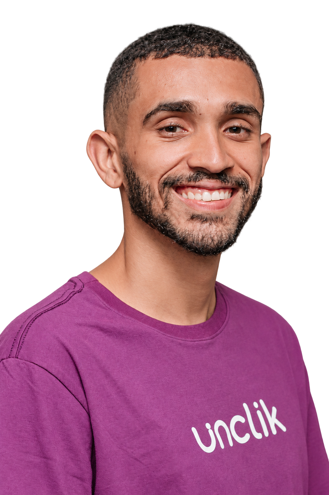
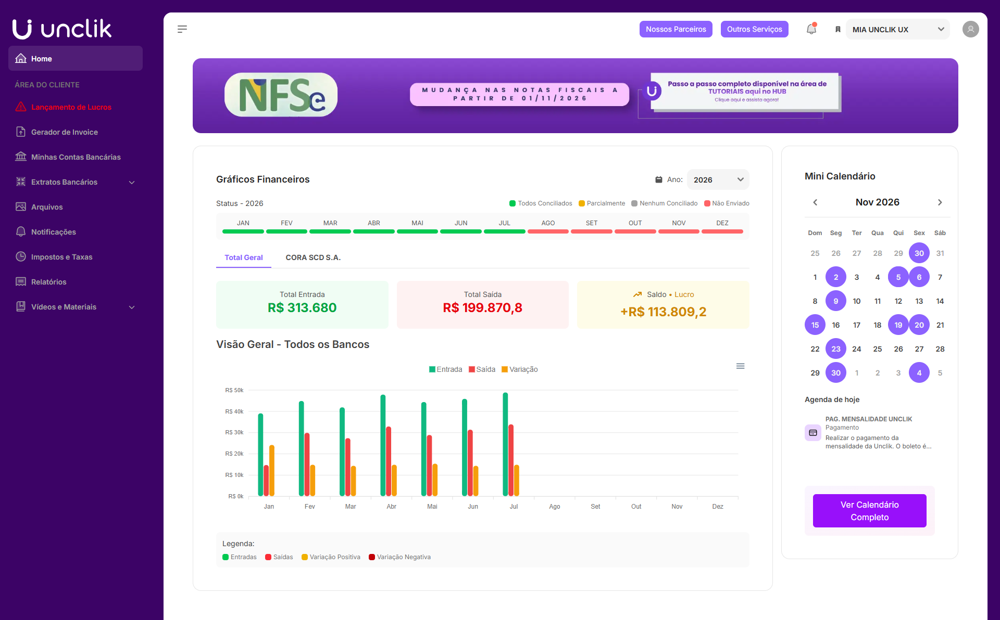
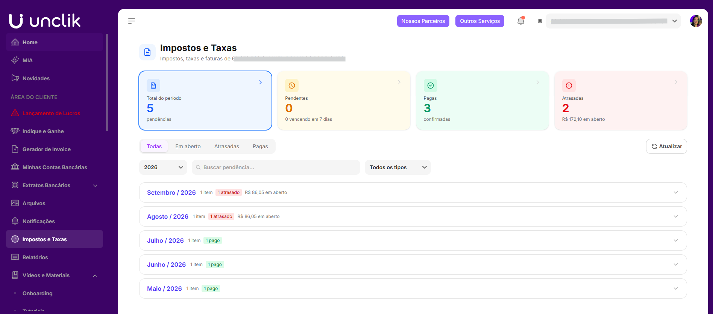
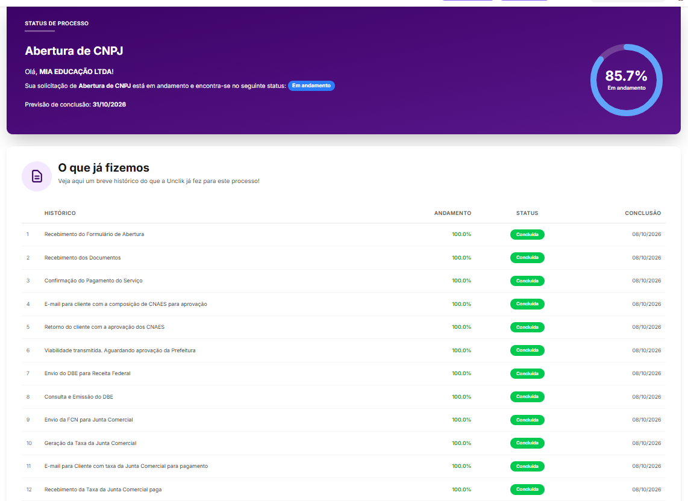
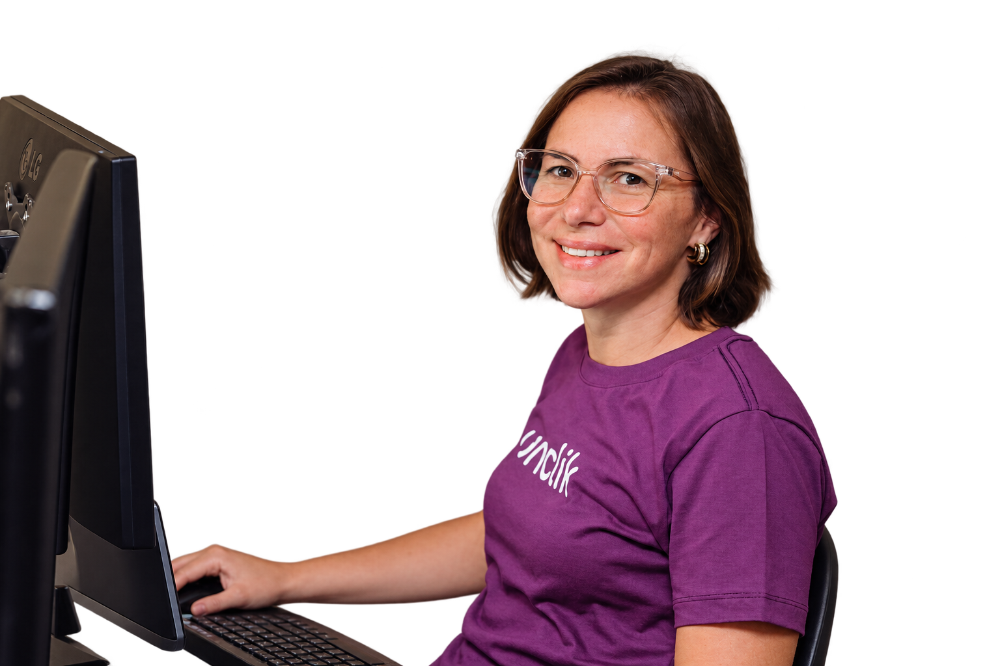
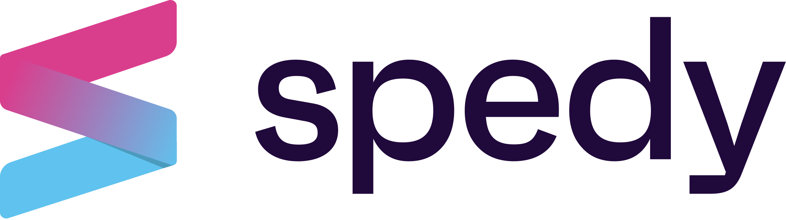
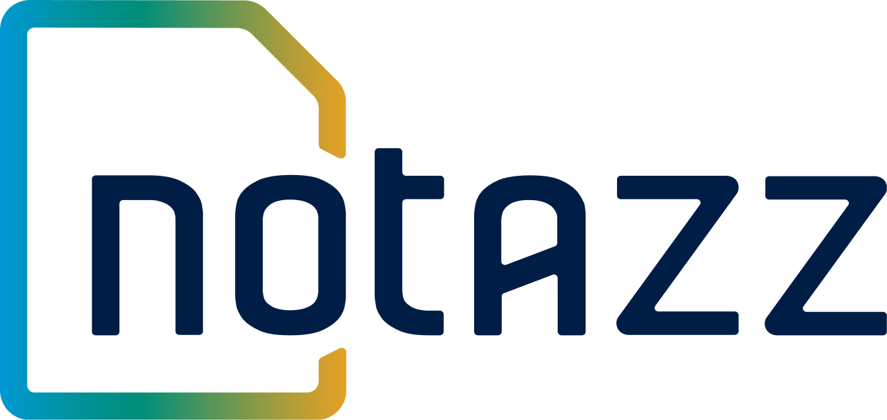

Vendas digitais
na rotina contábil
Organizamos informações de vendas em plataformas, taxas e comissões na rotina contábil, com apuração de impostos e acompanhamento das obrigações previstas no seu plano.
Seu negócio tem plataformas de venda, comissões, lançamentos ou contratos de serviço? Conte com uma equipe que conhece essa rotina, explica seus impostos e ajuda você a organizar o próximo passo.
Na Unclik, você tem atendimento humano e tecnologia própria para acompanhar sua empresa de perto, de onde estiver.
+600 negócios digitais atendidos.
Atendimento online em todo o Brasil.

atendendo o mercado digital.
em economia tributária para nossos clientes.
contabilizados em 2025.
Escolha o seu momento e veja como começar.
Vende infoprodutos, cria conteúdo ou presta serviços? Conte sua atividade e o momento do negócio para nossa equipe orientar a abertura.
Você envia a documentação solicitada. A Unclik orienta as atividades e o enquadramento e acompanha os trâmites de abertura.
Com o CNPJ aberto, alinhamos sua rotina contábil. Você acompanha documentos e processos pelo HUB e conta com a equipe para tirar dúvidas.
Conte o que faz, seu faturamento e o que precisa melhorar no atendimento. Nossa equipe avalia sua operação e apresenta o acompanhamento adequado.
Orientamos os documentos e as informações necessários para a mudança, incluindo a comunicação com a contabilidade atual.
Com a transferência concluída, sua rotina contábil passa a ser acompanhada pela nossa equipe, com documentos e informações reunidos no HUB.

Você precisa explicar como funcionam suas vendas, comissões e repasses toda vez.
A guia de imposto chega, mas a explicação do que você está pagando não.
Na hora de emitir uma nota ou receber do exterior, falta uma orientação clara.
Vendeu na Hotmart, fechou uma publi ou recebeu de um cliente do exterior? Nossa equipe ajuda você a entender os impostos, organizar os documentos e acompanhar o que muda na sua empresa.
Pelo WhatsApp e por e-mail, você conversa com pessoas que conhecem a rotina de quem lança, cria conteúdo ou presta serviços no digital.
Organizamos informações de vendas em plataformas, taxas e comissões na rotina contábil, com apuração de impostos e acompanhamento das obrigações previstas no seu plano.
Seu faturamento mudou depois de um lançamento? Vai incluir um serviço ou atender clientes no exterior? Analisamos a operação e comparamos cenários para orientar as decisões tributárias, conforme o escopo contratado.
Orientamos notas de publis, infoprodutos e serviços, além do pró-labore e das rotinas de quem trabalha com você. Configuração de sistemas, emissão pela equipe e atendimento a funcionários seguem o escopo contratado.
No HUB Unclik, você consulta informações da empresa e acompanha processos. Quando precisa entender o que fazer, conta com nossa equipe de contadores.



Visualize entradas e saídas a partir das informações financeiras registradas na plataforma.
Consulte arquivos, relatórios e guias da empresa no mesmo lugar.
Acompanhe as etapas da abertura do CNPJ e de outras solicitações.

Você fala com nosso time, não com um robô. Pessoas que conhecem o digital, escutam suas dúvidas e explicam os próximos passos do seu negócio.

“São uma contabilidade que eu tenho TOTAL confiança, sempre dispostos a ajudar, sempre informando sobre tudo que está acontecendo …”

“… Ter uma contabilidade especializada no mercado digital faz toda diferença! Recomendo fortemente!”

“Confio e indico a Unclick. Sou cliente há quase 2 anos e não troco. Tudo muito assertivo, prático e organizado. …”

“… a Unclik não é só a melhor contabilidade que já trabalhei, eles são a melhor prestação de serviço que já vi no mercado.”

“Sou cliente há alguns anos, sempre me ajudam com tudo o que preciso! Recomendo a todos!”
“Eu gosto muito do trabalho de vocês, a comunicação é muito fácil, vocês sempre respondem as minhas dúvidas e adoro os informes por e-mail. Realmente indico demais!”

“Eu já indiquei várias vezes! Pois sinto que a minha empresa está sendo bem cuidada e com potencial de crescimento por ter vocês.”
Nossos planos consideram o faturamento, o regime tributário e as necessidades da sua empresa. Vamos entender sua operação para apresentar o escopo e o investimento adequados.
Para empresas com faturamento de até R$ 50 mil por mês.
Rotina contábil, pró-labore dos sócios, envio de guias de impostos e taxas, balanço patrimonial e DRE anual, com suporte por WhatsApp e e-mail.
Para empresas com faturamento de até R$ 150 mil por mês.
Inclui os serviços do Start e acrescenta reuniões por videochamada e planejamento tributário anual para acompanhar as decisões da empresa.
Para empresas com faturamento de até R$ 250 mil por mês.
Inclui os serviços do Plus e atendimento de departamento pessoal para até dois funcionários CLT.
Precisa de um atendimento sob medida?
Conheça o VIP, com gerente dedicado e serviços personalizados, ou solicite uma proposta para operações no Lucro Real e outras necessidades específicas.
Serviços adicionais têm contratação e condições próprias. A sede virtual faz parte dos planos, conforme a viabilidade da atividade e do município.
Além da contabilidade, você pode contratar soluções complementares de acordo com sua necessidade:
apoio operacional em contas a pagar e receber, conciliação bancária e relatórios gerenciais.
parametrização de sistemas e serviços de gestão e emissão conforme o escopo contratado.
certificado digital, sede virtual e registro de marca.
Artigos, vídeos e materiais para entender os impostos, a contabilidade e a rotina do seu negócio digital.



Acompanhamento contábil para quem vende produtos digitais nessas plataformas.

Nosso atendimento é online e alcança empresas em todo o Brasil. Na conversa inicial, verificamos a viabilidade para sua atividade e seu município.
Você tem suporte humano pelo WhatsApp e por e-mail. O HUB reúne informações e facilita os processos. Nossa equipe orienta você nas dúvidas e na rotina contábil. Reuniões por videochamada estão previstas a partir do plano Plus.
Sim. Orientamos a abertura da empresa, desde a definição das atividades e a análise do enquadramento até os documentos necessários e o acompanhamento do processo.
Primeiro, entendemos a situação da sua empresa. Depois, orientamos a documentação e a transferência da responsabilidade contábil, com alinhamento das etapas para iniciar o atendimento.
Sim. Avaliamos as características da operação e comparamos cenários para orientar a escolha. O planejamento tributário anual faz parte dos planos Plus e Pro; análises específicas seguem o escopo contratado.
O HUB permite enviar e classificar movimentações e acompanhar os dados financeiros informados. Para ter apoio operacional em contas a pagar e receber, conciliação e relatórios, você pode contratar o BPO financeiro separadamente.
O investimento depende do faturamento, do regime tributário e dos serviços necessários. Nossa equipe apresenta uma proposta com o plano, as entregas e os valores para sua empresa.
A sede virtual pode ser uma alternativa para registrar o CNPJ. Nossa equipe verifica a viabilidade de uso conforme sua atividade e o município.
Conte o que você faz e em que momento sua empresa está. Nosso time vai entender sua necessidade, explicar como podemos ajudar e apresentar os próximos passos.
Na Unclik, você tem atendimento humano e tecnologia própria para acompanhar sua empresa de perto, de onde estiver.